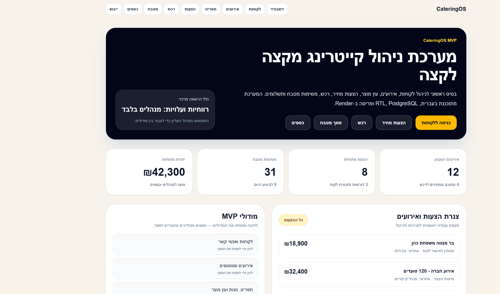
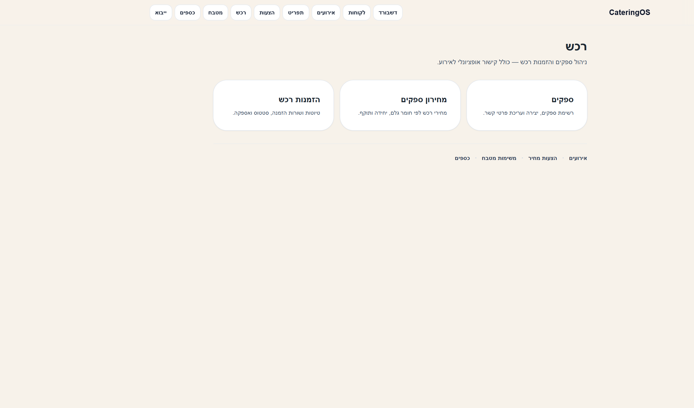

פתחו את כתובת המערכת בדפדפן (מקומית: http://localhost:3000, בפרודקשן: כתובת Render).
אין עדיין מסך התחברות — כל המשתמשים רואים את אותם מסכים.
אם מופיעה שגיאת «לא ניתן לטעון את העמוד»: ודאו ש־PostgreSQL פועל (npm run db:up), הריצו npx prisma migrate deploy, ובדקו ש־DATABASE_URL מוגדר בקובץ .env.

איור 1 — דשבורד: נקודת כניסה עם קיצורי דרך לכל המודולים.
2. סרגל ניווט עליון
כפתור
תפקיד
דשבורד
מסך הבית
לקוחות
רשימת לקוחות ויצירה
אירועים
אירועים לפי תאריך וסטטוס
תפריט
מנות, חומרי גלם, עץ מוצר (מתכון)
הצעות
הצעות מחיר ורווחיות
רכש
ספקים, מחירון, הזמנות רכש
מטבח
משימות הכנה (מותאם לטאבלט)
כספים
רישום תשלומים
ייבוא
טעינת CSV מאקסל
מדריך
מדריך משתמש (/guide)
3. זרימת עבודה מומלצת
לקוח → אירוע → תפריט + מחירון → הצעת מחיר → אישור → מטבח → רכש → תשלום
יצירת לקוח (שם + טלפון חובה).
פתיחת אירוע — תאריך, מספר מוזמנים, רמת שירות, כתובת.
הגדרת תפריט: מנות, חומרי גלם, שורות מתכון, מחירון ספקים.
יצירת הצעת מחיר לאירוע + הוספת שורות (מנות וכמויות).
שמירה עם סטטוס «אושרה» — מעדכן את האירוע ויוצר משימות מטבח אוטומטית.
רכש: הזמנות לספקים (קישור לאירוע אופציונלי).
מטבח: ביצוע משימות ועדכון סטטוס.
כספים: רישום תשלום מהלקוח.
טיפ: ניתן לייבא נתונים מראש מ־CSV (סעיף 12) במקום הזנה ידנית.
4. לקוחות
לחצו «לקוחות» בסרגל → «לקוח חדש».
מלאו שם, טלפון (חובה), סוג לקוח (פרטי / עסקי / מוסדי), אימייל, כתובת, ח.פ, הערות.
«פרטי הצעה»: הנחה, עלות פנימית, תנאי תשלום, הערות, תוקף.
לאישור: שנה סטטוס ל«אושרה» ושמרו — האירוע יסומן מאושר, וייווצרו משימות מטבח (סעיף 10).
הצעה מאושרת ננעלת לעריכה (MVP).
בעמוד ההצעה: עמודת «הערכת עלות» לכל שורה + סיכום «סה״כ הערכת עלות (מחירון)» בסרגל.
8. חישוב עלות אוטומטי
המערכת מחשבת עלות מתכון לפי:
מתכון פעיל של המנה (כמויות + פחת).
מחירון ספקים — יחידת המחיר חייבת להתאים ליחידה בשורת המתכון.
ספק מועדף לחומר (אם קיים מחיר תקף), אחרת המחיר הזול ביותר.
טווח תאריכי תוקף במחירון (אם הוגדר).
איפה רואים: בעמוד עריכת מנה; בהצעת מחיר (עמודת הערכת עלות).
מחירון: רכש → מחירון ספקים.
9. רכש

איור 2 — מרכז רכש: ספקים, מחירון והזמנות.
ספקים — רשימה, יצירה, עריכה; בכרטיס ספק גם טבלת מחירון.
מחירון ספקים — מחיר לפי ספק + חומר גלם + יחידת מחיר (עדכון = upsert).
הזמנות רכש — טיוטה, שורות (שם חומר, כמות, יחידה, מחיר משוער), סטטוס; קישור לאירוע אופציונלי.
10. משימות מטבח
יצירה אוטומטית: כשהצעת מחיר נשמרת כ«אושרה» ויש בה שורות מנות — נוצרת משימה לכל מנה (כמות מסוכמת), תאריך עבודה = תאריך האירוע, מחלקה «הכנה מוקדמת». ההערה מתחילה ב־[אוטו-הזמנה].